Separation of violent human combat, control of the surface of the planet, forced infrastructure rebuilding, control of nearby space and latest weapon testing is possible. Let's make it happen by 2128! What is the path towards instituting Non-Lethal, Non-Mutilating, No Serious Injury combat system?
Site is moving
The version of NLNM proposed here (that many would probably subscribe
to) is that of a land-based, hand-to-hand combat system. As such it is
meant to be implemented on any suitable land-based terrain on our planet
Earth. It is a combat system that is expected to eventually be used by
all Earth-based entites with responsibilities of governmental structures.
...
There will be more than one way to arrive at more than one version of NLNM. Time and effort will have to be put in to include all of the viable ways in the way forward and get the people (that will eventually be working on them) to work towards the common goal (Non-Lethal, Non-Mutilating, No Serious Injury combat).
It will take an unknown period of time to get to initial implementation
of NLNM. It will probably take lots more time to get it working for the
entire planet, working correctly. This is a long term,
multi-generational process. But it must be done and sustained effort
must be put in. The longer people work on it and the more people get
involved the more respect the feasibility of NLNM will get.
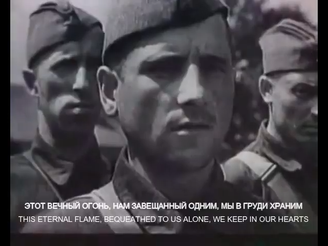
Today is the 80th anniversary of the end of World War II. Lest We
Forget.
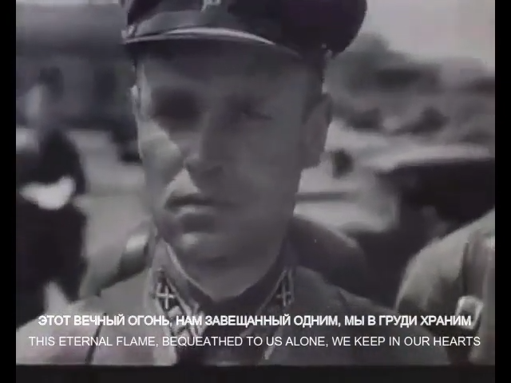
Today is the 86th anniversary of the start of World War II. Lest We
Forget.
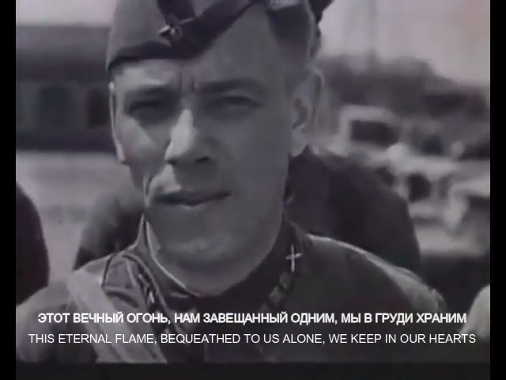
Today is the 84th anniversary of the attack of Nazi Germany
on the Soviet Union. Lest We Forget.
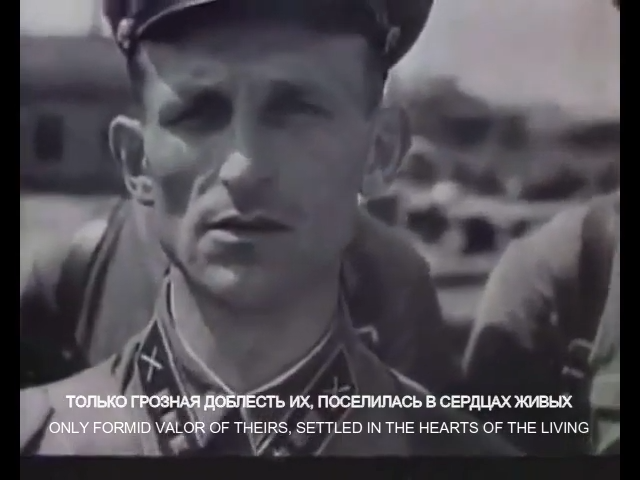
Today (01:01 Moscow Time, Updated: 9/2/2025 yesterday 23:01 CET) is the 80th
anniversary of the surrender of Nazi
Germany. Lest We Forget.
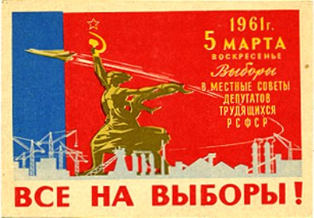
Goal: External & internal solidarity, peace, welfare.
- Self Determination: Bidirectional accountability in local and regional electoral systems.
- Security: Consensus on RF-RP-RT-Romania-Hungary shared influence space. Population growth. Preservation of identity.
- Prosperity: Strengthening the professional education system. Non-violent, conscious local and regional economic organization. Harmonious economico-financial domestic climate.
- Positive Long Term Outlook: Successful exit from the third cycle of democratization of elites. The non-rebellious moderator of the emphasis on society. The Earth-centric cosmic flagbearer.
- Active External Forces: India, PRC, Iran, AUKUS, EU
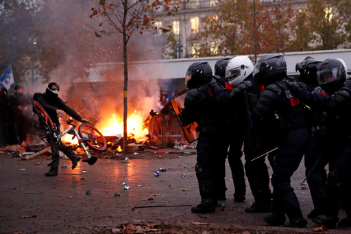
There is a saying in India - we would have no problems with China if
Tibet was independent. The largest mountain range on the planet is between
the two countries, Fixed: 1/18/2025 Nepal provides some distance between the
most heavily populated Uttar Pradesh & Bihar, while Butan separates China from
northern West Bengal & western Assam, but that has not sufficiently insulated the
two countries from each other, pertaining to security. There is a clear need
for a large, contiguous land mass between the two regions with sufficiently
different interests.
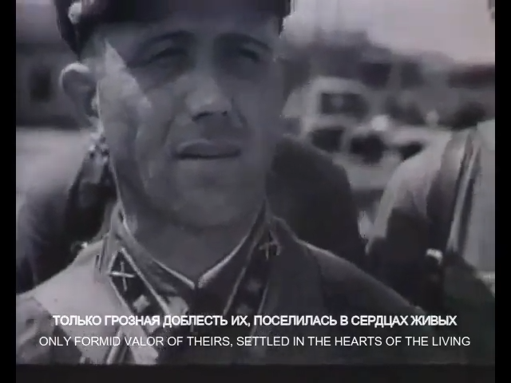
Today is the 83rd anniversary of the attack on
Pearl Harbor. Lest We Forget.

The number one factor to Non-Lethal, Non-Mutilating, no Serious Injury combat
system.
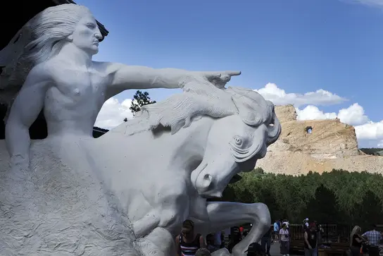
Goal: Bipartisan momentum for investment in family, education and opportunity.
- Self Determination: Left or right lean in a business focused course
- Security: The surrounding oceans
- Prosperity: Continentally sufficient economy
- Positive Long Term Outlook: The Nonthreatening Avangard in culture and industry of the multi-civilizational, multi-latteral world. Added: 1/18/2025 Tame the energy of tornadoes then large cyclones. Tap the lava of Kīlauea then Yellowstone.
- Active External Forces: Global, foreign and diasporic; overt and veiled; idelogical, political and economic; advocacy and lobbying and maneuvering.
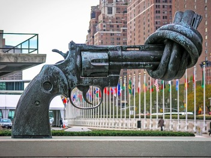
Pull for Peace Now!
In the next four months, two
and a half million Sudanese could die of hunger-related
causes. Urgent action to stop the war is needed NOW!
A cornerstone moment While achieving peace, secure the long-term, inter-regional balance and lay the foundation for non-lethal combat.
...
A cornerstone moment While achieving peace, secure the long-term, inter-regional balance and lay the foundation for non-lethal combat.
...
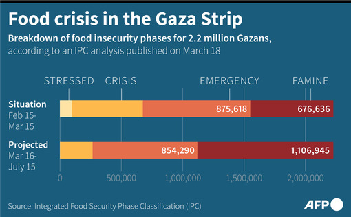
Large quantities of food are beginning to arrive in Gaza. But continuous food delivery is under threat of blockades by radical groups in Israel and there are reports of Israeli police and IDF stopping and delaying food convoys. There have been several IDF attacks in Gaza on food convoys and on the people getting food off the aid trucks.
The Palestinian tribes and clans in Gaza are beginning to participate in enabling food distribution. But the strong resistance to any perceived cooperation with Israeli authorities is impeding the process. There is a lack of coordination on this critical issue between groups of authority in Gaza.
The history of mutual atrocities is impeding delivery of life saving aid. Working together may be hard or impossible but there are always ways of getting the most critical tasks done, even without mutual cooperation. Ways must be found to continuously get the food to the people that need it. Continuous delivery and distribution of food is the most important priority.
Goal: Common ground in Hamas-Israel ceasefire talks.
...
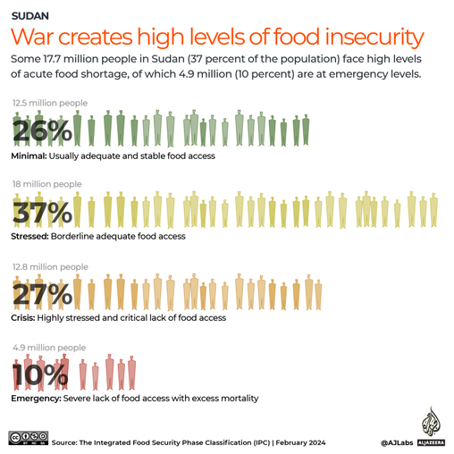
With apparent peace talk delays we are losing focus on the most important task of all - preserving the lives of Sudanese people. Competing interests are preventing a ceasefire solution and the path forward may lie in securing food delivery and distribution first. Once the acknowledgement of the principal importance of this task can be accomplished by the parties that can ensure its fulfillment, its implementation could be the greatest contribution to accomplishing a ceasefire.
Goal: Prospects of long term peace between EU and CIS as a driver for ASAP ceasefire in Ukraine
With its strong regional influence in Ukraine, Poland is the best Western facilitator of ceasefire talks.
- Self Determination: Balance of liberal vs. conservative and eurocentric vs. national interests
- Security: AUKUS, increasing self-sufficiency, NATO
- Prosperity: Skilled Manufacturing, ICT, future local ownership
- Positive Long Term Outlook: The North Slavo-Catholic bridge between East and West, European NATO leader, Europe's "growth engine"
- Active External Forces: Germany, AUKUS, CIS, France, PRC
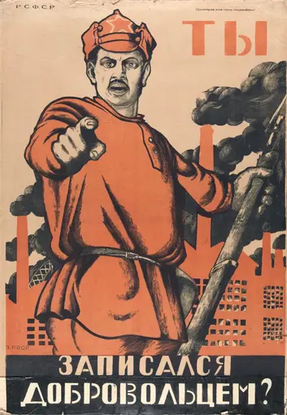
If Japan's civilization had to be described by one visualisation, the famous picture of the huge wave over Mount Fuji would probably work best. Thus, it could be argued that it has attained its unparalleled cultural refinement (which is likely our best hope for long term survival in the cosmic world) and military might (necessary to maintain our independence) through the natural facts of its existence. Japan is once again prioritising its defense.
Korea's location between China, Russia and Japan forces it to balance between greater forces. In the face of changing generational preferences North Korea is changing its peninsular policy, while South Korea is increasing its regional influence, expressing willingness to work with "not like minded" states and is proactively seeking a renewal of the international order.
The world was much easier to manage when there were two poles of influence. Modern day Commonwealth of Independent States is largely an agglomeration of neo-feudal states without a global idea. The natural "Global North/South" split will more equally take into account interests of all sovereignties, but it will take time to arrive at such a configuration.
Eurasia's history is marked by the freeing influence of the West and the willful approach of the East. It stands as the gateway between these two ways of thinking and two ways of life. The Russian Federation is the biggest and most influential state of this formation. It has a relatively low population and very vast territory. Combined with the northern climate this led to the development of wait-and-see progress bursts, aggressively defensive martial culture (with a necessity to centralize) and a mobilization economy. Being considered a Western country in the East and an Eastern country in the West, Russia offers a way of thinking that blends both perspectives.
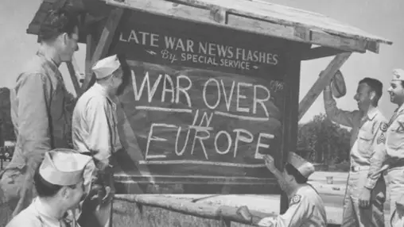
Europe has been at near constant warfare for the entire history of its civilization right until the end of World War II. Can it stay free of deadly and mutilating conflict in the face of increasing unifying (whole of) North America, economically influential China and likely soon to be "sovereign" CIS?
The reasoning for invading Iraq has wider multifaceted
regional basis and goes deeper than the misguided effort to
remove a security threat or the blatant pursuit of an
opportunistic war to solidify hegemony.
The Western Civilization starts with Greek democracy of the privileged many, moves to the republic of the powerful few and goes to the more free vassage of the chosen noble. The non-violent and universal Christianity played a critical role in moderating the feudal rights and its subsequent relaxation added a resource perspective to subsequent Western expansion.
AUKUS is a security partnership between the USA, UK and Australia. The three constituent countries of AUKUS descended from Great Britain, which developed the fastest among the Western nations. Its geography acted as both a protective barrier and as an incentive to have a more moderated, trade oriented outlook on warfare.
Goal: Understanding between sides to accomplish ASAP ceasefire
- Self Determination: Army vs RSF across Arab, Nubian, Southern, across varying size ethnic groups, across Arabic vs English language
- Security: Local - UK, Regional - USA vs PRC
- Prosperity: Nile, Gold, Oil
- Positive Long Term Outlook: LANDbridge between Ethiopia and Egypt, in Africa - Middle East macroregion
- Active External Forces: Iran, UAE, Yemen, Russian Federation, Ukraine, Ethiopia
From the early beginnings of its history China has
considered itself the middle land that exists in the midst
of relatively more barbarian surroundings. Until the Western
Imperial expansion of the 19th century terms "the Middle
Kingdom" and then the more encompassing "All under Heaven"
were common. For the bulk of the history of our
civilizations it has been the biggest economic and trade
force on the planet. In the post-Imperial age the slogan
"Striving for Unity" is helping the Chinese people look past
their differences and work towards social harmony. At the
same time this concept is used to proactively oppose the
remaining Western influence over the Chinese state and its
territories, including the controversially debated Taiwan.
Besides unity the modern day Chinese culture is very much
about prosperity. China is not interested in conquering its
surroundings and would rather enjoy economic leadership
achieved through war-preempting means.
There are 5 forces that play a decisive role in the
resolution of the Ukraine -> Sudan -> Gaza conflict chain.
They are AUKUS, Russian Federation, China, India and Japan
(in the order of relevance). The two civilizational
countries that have the most influence in resolution of the
on-going conflicts are India and China. Providing the Causes
of War of these countries pave the path towards an as soon
as possible, peaceful resolution of these conflicts, which
has to do with realizing that we are on the verge of
entering the age of
fusion energy
(using deterium from the oceans and cynthesized
or
mined
Helium-3) and robotization.
India is the oldest continuous civilization on the planet
and arguably the country best positioned to achieve
non-lethal, non-mutilating warfare first.
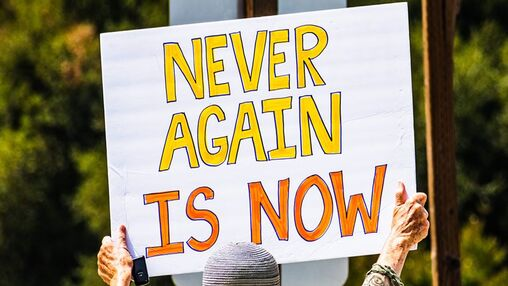
Current wars in Sudan, Gaza and Ukraine are interlinked and resolving the most global of these conflicts will lead to stabilizing, cascading effects. Lack of immediate action to stop humanitarian crises will have negative cascading effects for the entire planet and for the main power holders in the world.
Ukraine is entering winter with Kyiv and Kharkiv now in mean average negative temperatures. If Russia chooses to accelerate its likely plans the country will be defactor in diesel generator mode placing the population at high risk. Now, before the customary Russian winter offensive is the time to act and save the Ukrainian people from cold and hunger in the best case or the being under direct fire and the beginning of the partitioning of the Ukrainian state between The East and The West in the worst. Let's get to an uneasy ceasefire in the now irreversible territorial realities before it's too late!